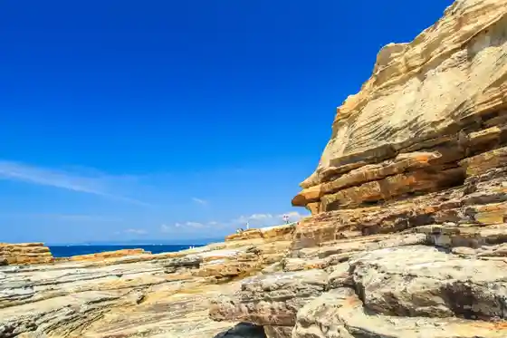
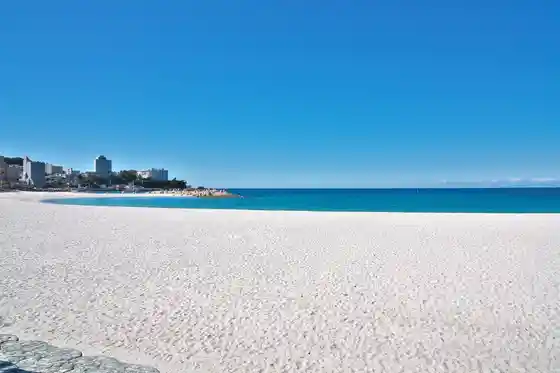

Senjojiki
Shirahama, Wakayama · 0739-43-6588 · Official / source link

Adobenchawarudo
Shirahama, Wakayama · 0570-06-4481 · Official / source link
Toretore Market
Shirahama, Wakayama · 0739-42-1010 · Official / source link
Shiro Ryo Hama
Shirahama, Wakayama · 0739-43-5511 · Official / source link

Saki Baths
Shirahama, Wakayama · 0739-42-3016 · Official / source link
Engetsu Shima
Shirahama, Wakayama · 0739-43-6588 · Official / source link
Sandan Kabe
Shirahama, Wakayama · 0739-42-4495 · Official / source link
Shirahama Enerugii Land
Shirahama, Wakayama · 0739-43-2666 · Official / source link
Kyotodaigaku Shirahama Aquarium
Shirahama, Wakayama · 0739-42-3515 · Official / source link
Fisshamanzu Wafu Shirahama
Shirahama, Wakayama · 0739-43-1700 · Official / source link
Hirakusa Hara Park
Shirahama, Wakayama · 0739-43-2967 · Official / source link
Ebine Onsen
Shirahama, Wakayama · 0739-53-0366 · Official / source link
Kishu Shirahama Onsen Musashi
Shirahama, Wakayama · 0739-43-0634 · Official / source link
Minakatakumagusu Memorial Museum
Shirahama, Wakayama · 0739-42-2872 · Official / source link
Kazoku Tosugosu Shirahama no Yado Yanagi Ya
Shirahama, Wakayama · 0739-42-3360 · Official / source link
Shirahama Art Museum
Shirahama, Wakayama · 0739-42-2589 · Official / source link